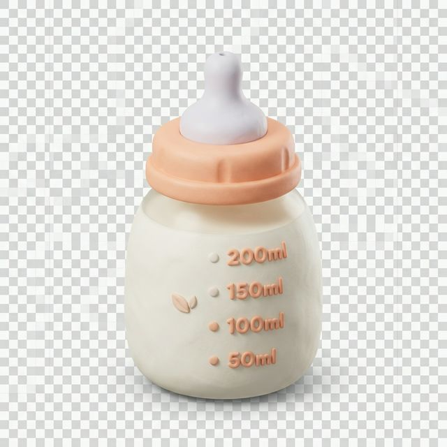

Hành trình làm Mẹ
Theo sát từng cột mốc phát triển của cả Mẹ và Bé
Giai đoạn Thai kỳ
0 – 9 tháng • 40 tuần diệu kỳ
Tháng
1-3
Ốm nghén & Mệt mỏi
Mẹ thường xuyên chóng mặt, buồn nôn vào buổi sáng. Hãy chia nhỏ bữa ăn nhé!

Tim thai đầu tiên
Tuần 6: Mẹ đã nghe thấy nhịp đập bé bỏng. Thật kỳ diệu!
Bản ghi âm 0:15s
KIẾN THỨC CẦN BIẾT
- Bổ sung Vitamin & Axit Folic
- Theo dõi tiểu đường thai kỳ
- Lập kế hoạch tài chính sinh con
- Chọn bệnh viện phù hợp
Giai đoạn Sau sinh
0 – 6 tuần • Phục hồi & Kết nối
Tắc tia sữa & Viêm vú
Vấn đề đau đầu nhất của 80% các mẹ. Đừng tự chữa, hãy hỏi AI tư vấn!
Trầm cảm sau sinh
Mẹ cảm thấy cô đơn, mệt mỏi? Hãy chia sẻ với cộng đồng Momcare.
Trẻ sơ sinh
0 – 3 tháng • Thế giới mới

Vấn đề: Nôn trớ & Trào ngược
Trẻ sơ sinh thường bị trớ sữa sau khi bú. Hãy bế đứng bé 20 phút và vỗ ợ hơi đúng cách.
🔥
30 Vấn đề đau đầu
Xem
video hướng dẫn
Ghi dấu thêm kỷ niệm?
Lưu lại ảnh hoặc nhật ký hôm nay của Bé.